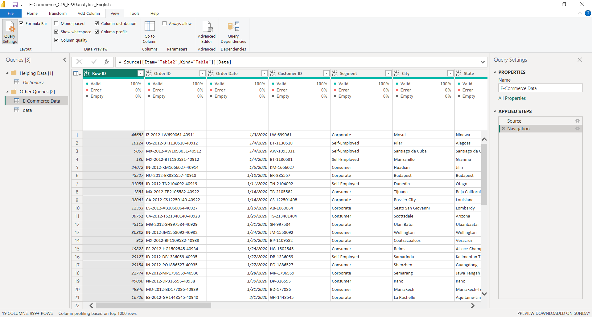

Goal
The goal of this project was to analyze e-commerce performance metrics such as sales, profit, customer segmentation, and regional trends to derive actionable insights that support business growth.
Background Information
The dataset included detailed transactional records from an e-commerce platform, covering categories like customer demographics, order quantities, product types, sales values, profits, and shipping data across multiple years.
Setup
Using Power BI, I imported and cleaned the dataset with Power Query Editor. I ensured data types were consistent, removed duplicates, handled missing values, and created new calculated columns for profit margin and year-based filtering.
Dashboard Design and Creation
The dashboard was designed with a clean, user-friendly layout to highlight key performance indicators (KPIs) such as total sales, total profit, top-performing categories, and regional breakdowns. I used clustered bar charts, line charts, slicers, and cards to visualize the trends and comparisons.

Conclusion
This dashboard provided clear insights into product and region-level performance, identifying that Asia Pacific and Europe were top markets in both sales and profit. The corporate segment showed the highest profitability. These insights support data-driven decisions for future marketing and inventory strategies.